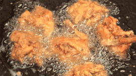
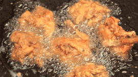

炸（zhá) This is frequently used in Chinese cuisine. Half a pot of oil is heated to a very high temperature and food is cooked in the hot oil. In most cases, spices have been added to the food before frying.
 
